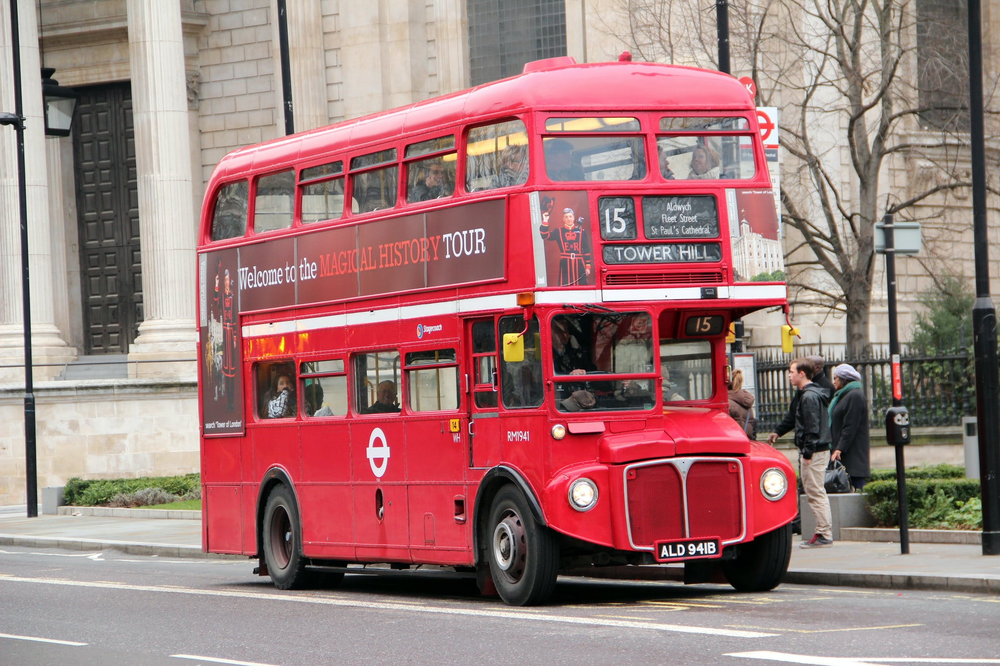

Transport in London


London has an extensive and developed transport network which includes both private and public services. Journeys made by public transport systems account for 37% of London's journeys, while private services accounted for 36% of journeys, walking 24% and cycling 2%. London's public transport network serves as the central hub for the United Kingdom in rail, air and road transport.
Public transport services are mostly driven through the executive agency for transport in London: Transport for London controls the majority of public transport, including the Underground, Buses, Tramline, the Docklands Light Railway, London River Services and the London Overground. Other rail services are either franchised to train operating companies by the Department for Transport or, like Eurostar and Heathrow Express, operated on an open-access basis. also controls most major roads in London, but not minor roads. In addition, there are several independent airports serving London, including Heathrow, the busiest airport in Europe.